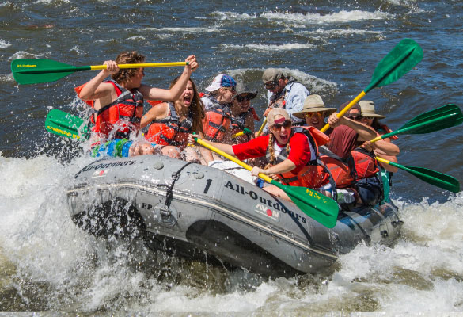

Purpose
The purpose of our website is to provide information about various rafting adventures, including locations, difficulty levels, and safety measures.
Recreation and Adventure
Many people enjoy rafting as a thrilling outdoor activity that allows them to experience the excitement of navigating through rapids and exploring scenic river landscapes.
Team Building and Bonding
Rafting trips often serve as team-building exercises for groups, whether it's coworkers, friends, or family members. Working together to navigate the river fosters communication, cooperation, and trust among participants.
Physical Exercise
Rafting provides a full-body workout, requiring paddlers to use their arms, legs, and core muscles to maneuver the raft through the water. It's a fun way to stay active and improve cardiovascular fitness.
our Most Popular Rafting Trips
This is our popular rafting trip
american-river-rafting
Audience
We targets adventure enthusiasts, nature lovers, and thrill-seekers who are interested in exploring different rafting experiences. we have some answers from our people who contacted us:
- Q: I'm planning a family trip. Are there any family-friendly rafting options available? A: Yes, we offer family-friendly rafting trips suitable for all ages.
- Q: What are the safety measures in place for beginners? A: We provide thorough safety briefings and experienced guides for beginners.
- Q: Are there any advanced rafting routes for experienced adventurers? A: Absolutely! We offer challenging routes for experienced rafters looking for adrenaline-pumping experiences.